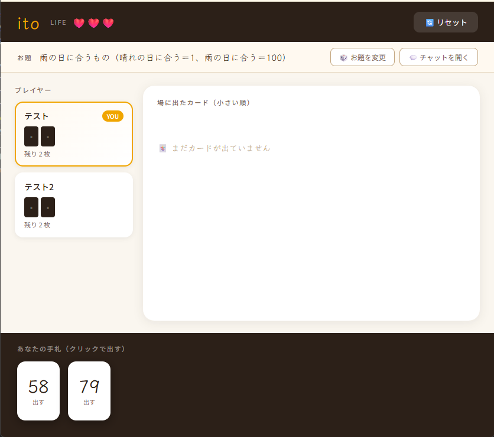

ボードゲーム「ito」をブラウザ上でリアルタイムに複数人で遊べるWebアプリケーション。
URLを共有するだけでルームに参加でき、離れた場所にいる友人ともすぐにプレイできる。
URL
担当
デザイン・コーディング
制作背景・動機
友人とボードゲームカフェで「ito」を遊んだことがきっかけ。
シンプルなルールながら盛り上がれるゲーム性に魅力を感じ、「これをオンラインで再現できたら、場所を問わず楽しめるのでは」と思い制作を決めた。
また、リアルタイム通信やマルチプレイヤー管理など、これまで経験のない技術領域に挑戦できる題材でもあり、自分の技術力を広げる機会として取り組んだ。
使用技術
- React
- Firebase Realtime Database
- JavaScript
- Vercel
実装のポイント・工夫した点
リアルタイム同期の設計:
Firebase RealtimeDatabaseを用いて、カードの提出・ターンの進行・ライフの増減など、ゲームの状態変化を全プレイヤーに即時反映している。
誰かが操作するたびに全員の画面が同時に更新されるよう、データ構造とリスナーの設計を工夫した。
ルームURLによるマルチプレイの実現:
URLを共有するだけで同じルームに参加できる仕組みを実装。インストール不要・アカウント登録不要で、気軽に友人を誘えることを重視した設計。
ゲームロジックの忠実な再現:
カードを小さい順に出し、順番が前後したらライフが減るという原作ルールに加え、ステージ制・ライフ制・ステージクリア時のHP回復など、拡張ルールも含めて実装。
UIの視認性:
プレイ中に自分の手札・他プレイヤーの状況・場に出たカードを直感的に把握できるよう、情報の優先度を整理しながらレイアウトを設計。
苦労した点・解決したこと
UIとゲームの情報量の整理:
カード・プレイヤー・ライフ・ステージなど表示すべき情報が多く、画面がまとまりにくい課題があった。
実際にプレイを繰り返しながら「どの情報をどこに置くか」を見直し、プレイ中に迷わない画面構成に仕上げた。
今後の改善点
AIを利用した一人プレイモードの実装:
現状はマルチプレイのみ対応しているが、一人でもルールや感覚を試せるソロモードを追加したいと考えている。
アプリへの入り口を広げ、初めてのユーザーがゲームの流れを掴みやすくする狙いもある。